[DB] PostgreSQL 알아보기 + PostGIS를 활용한 연산해보기 (w. DBeaver, GiST)
서론
CS 스터디에서 12월 17일 발표한 PostgreSQL 알아보기에 대해 정리하고, 이를 실습해본 문서를 블로그에 공유하고자 한다.
개요
PostgreSQL?
- 복잡한 데이터 워크로드들을 안전하게 저장 및 확장할 수 있는 기능들을 제공하는 오픈 소스
객체-관계형 데이터베이스 시스템객체-관계형 DB(Object-relational DB, ORD): 일반적인관계형 DB와 유사하지만,객체지향 개념이 추가적으로 지원되는 DB. 즉, DB단에서클래스,객체및상속의 개념을 지원
- 2001년부터
ACID를 지원해왔으며, 대부분의주요 OS들을 지원함- Linux(Debian, Ubuntu, Redhat 등..), macOS, Windows, BSD(OpenBSD, FreeBSD, ..), Solaris
지리공간 데이터를 효과적으로 저장 및 인덱싱하고 관련 쿼리를 지원하는PostGIS, DB단에서 암호화를 수행할 수 있는 기능들을 제공하는pgcrypto와 같은 다양한 확장 기능들을 사용할 수 있음- (2023년 기준)
SQL:2023(*또는 ISO/IEC 9075*)의 필수 기능 177개 중 170 이상을 준수하는,가장 표준을 완벽하게 준수하는 관계형 DB
기원
PostgreSQL은 버클리 캘리포니아 대학교에서 작성된POSTGRE패키지로부터 파생됨
POSTGRES 프로젝트
- 마이클 스톤브레이커 교수가 주도한 프로젝트로, 1986년 구현이 시작됨
POSTGRES는INGRES의 후속으로 1986년 개발되기 시작한 DBMSINGRES: 1975년 개발되기 시작한관계형 DBMS로, UNIX 운영체제 상에서 동작하며 쿼리 언어로QUEL을 사용(이후 SQL도 지원)INGRES의 초기 설계로는 스톤브레이커 교수를 포함한 개발진들이 추가 및 확장하고 싶은 기능들을INGRES에 통합할 수 없어, 새로운 데이터베이스 시스템인POSTGRES를 구축하게 됨
POSTGRES의 목표는 크게 다음과 같음 #복잡한 객체를 더 원활하게 지원할 것- 기존의 관계형 데이터베이스가 적합하지 않았던
CAD 시스템,지리 데이터등의 환경에 대한 지원 - 즉, 이러한 환경에서 사용되는
지오메트리(Point,Polygon, …)와 같은 타입의 지원
- 기존의 관계형 데이터베이스가 적합하지 않았던
- 데이터 타입, 연산자 및 접근 방법에 대한
사용자 확장성제공- 이 역시, CAD용
기하학 자료형이나, 매핑 애플리케이션용위도/경도와 같은자료형과연산자를 DBMS에추가할 수 있는 기능을 제공하고, 일부 유형에 적합한액세스 방법(ex.Point->K-D-B 트리,Polygon->R-트리) 방법을 추가할 수 있도록 하는 것을 의미
- 이 역시, CAD용
활성 데이터베이스(알림 및 트리거)와포워드/백워드 체이닝에 대한 추론을 위한 기능 제공활성 데이터베이스#: 데이터베이스 내/외부에서 발생하는이벤트에 대응할 수 있는이벤트-기반 구조를 포함하는 데이터베이스.포워드/백워드 체이닝#: 데이터 기반 추론에서, ‘알려진 사실에 규칙을 적용해 나가 목표까지 도달하는 추론 기법’(포워드 체이닝)과 ‘목표에서 시작해 역방향으로 알려진 사실에 도달하는 추론 기법’(백워드 체이닝)- 버그 리포트 시스템처럼, 특정 이벤트가 발생시 관리자에게 알림을 보내거나(
alerter) 특정 데이터의 업데이트 발생시 일관성 유지를 위해 업데이트를 전파(trigger) 할 수 있도록활성 데이터베이스와규칙(rule)을 지원하는 것규칙의 경우, 일정한 규칙(ex. 수업 일정 DB에서 교수는 N학점 이상 강의를 개설 및 진행하고 … 와 같은 규칙)을 따르는 테이블이라면, 복잡한 제약 조건들로 이를 강제하는 것이 아니라, 데이터들을 기반으로 이러한규칙을 추론하는 방향으로 구현해야 함
충돌 복구를 위한DBMS 코드 간소화- 대부분의 DBMS는 작성하기 까다롭고, 희귀한 케이스로 가득하며, 테스트 및 디버깅이 힘든 충돌 복구 코드들이 존재
- 게다가 앞선 목표 중
사용자 정의 접근 기법을 제공하는 것이 있었으므로,충돌 복구 모델은 가능한 간단하고 확장하기 쉬워야 함 - 따라서,
로그를일반 데이터로 취급해복구 코드를 단순화하고,기록 데이터에 대한 접근을지원
- 광디스크, 워크스테이션(여러개의 프로세서로 이뤄진), 커스텀
VLSI 칩등의 이점을 취할 수 있는 설계VLSI(초고밀도 집적회로) 칩: 수십억개의 MOS 트랜지스터를 결합해 단일 칩에 올리는 집적 회로 칩- 워크스테이션의 CPU 자원을 활용할 수 있고, 광디스크와 VLSI 칩을 효과적으로 활용할 수 있는 설계를 조사
- 관계형 모델을 가능한 적게 변경(가급적이면 변경 X)
- 많은 사용자들이 관계형 모델에 익숙해질 것이고, 관계형 모델이 데이터를 단순한 테이블 수준으로 강제하고, 관계형 대수 연산을 통해 테이블을 생성할 수 있는, 이른바
스파르탄 단순성(Spartan Simplicity)이라는 이점이 있기 때문 - 또한, 일반적인 계층 구조부터 CAD 데이터와 같은 복잡한 구조를 모두 다룰 수 있는
크고 복잡한 데이터 모델보단,확장 가능한 작고 단순한 모델을 기반으로 시스템을 구축해야 한다고 생각
- 많은 사용자들이 관계형 모델에 익숙해질 것이고, 관계형 모델이 데이터를 단순한 테이블 수준으로 강제하고, 관계형 대수 연산을 통해 테이블을 생성할 수 있는, 이른바
왜 PostgreSQL을 써야할까?
장점
- 함수, 데이터 유형, 언어 등을 추가할 수 있는
확장성이 높음 구조화되지 않은 데이터 유형 지원JSON,XML,H-Store(키-값 쌍으로 데이터를 저장하는 자료형)와 같은 다양한 데이터 유형을 지원하며, NoSQL기능을 지원.
- 교착 상태가 거의 발생하지 않고 동시 처리가 가능하며 트랜잭션 속도가 빠른
MVCCMVCC(Multi-Version Concurrency Control, 다중버전 동시성 제어): 동시 접근이 가능한 환경에서, 원본의 스냅샷과 변경중인 데이터를 동시에 유지해 별도의 락이 필요하지 않아 더 빠르게 동작하는 동시성 제어 방식
고가용성및서버 오류 복구- 데이터 암호화, SSL 인증서, 고급 인증 방법과 같은
고급 보안 기능 활발한 오픈소스 커뮤니티가지속적으로 솔루션을 개선하고 업데이트- 이외의 추가적인 장점은 PostgreSQL: About의
Why use PostgreSQL?에 나와 있음
단점
- SQL Server 및 MySQL과 같은
다른 RDBMS보다 성능이 느림- 다만 이는 경우에 따라 다름
- 일반적으로 읽기 작업만 수행할 경우, MySQL/MariaDB 대비 PostgreSQL이 느리다고 알려져 있음
호환성에 더 주력, 속도 향상을 위해서는추가 작업이 필요함MVCC모델로 인해 발생하는 여러 문제점 참고 1 - The Part of PostgreSQL We Hate the Most // Blog // Andy Pavlo - Carnegie Mellon University 참고 2 - PostgreSQL Vacuum에 대한 거의 모든 것 | 우아한형제들 기술블로그- 쿼리가 한 튜플을 업데이트하면, DBMS는 모든 컬럼을 새로운 버전에 복사함
Dead Tuple(기존 원본 데이터를 저장하여, 어디에도 참조되지 않는 Tuple)을 정리하는Vaccum(Java로 비유하자면GC)이 워크로드의write작업 속도를 따라잡지 못할 경우 쿼리 성능 저하(DBMS는Dead Tuple을 메모리에 로드해야 하므로),Dead Tuple에 의한 부실한 쿼리 플랜 최적화 등이 발생할 수 있음
MySQL -> PostgreSQL로 마이그레이션 하기
PostgreSQL생태계에는 다른 데이터베이스에서 자료를 가져올 수 있는 컨버터 툴들이 존재- 하지만 이들을 본인의 경우 사용하기 쉽지 않았음
- 대부분의 툴들이 Linux 환경에서나 원활하게 동작하기 때문(특히,
pgloader와pg-chameleon은 Windows를 사실상 지원 X) - 또한,
mysqldump를 통해 MySQL 데이터를 추출한 뒤,pg_store를 통해 복구하는 방법을 시도하는 사람들도 있었지만 두 DBMS의 규격이 달라 실패
- 대부분의 툴들이 Linux 환경에서나 원활하게 동작하기 때문(특히,
- 따라서 다음과 같이
DBeaver를 활용해 자료를 CSV로 변환하고, 이를 PostgreSQL에서 import하는 방식으로 마이그레이션을 진행- 먼저,
CSV 파일로 MySQL 테이블을 export함- 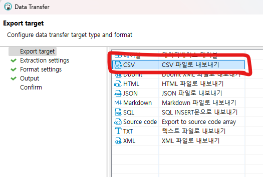
- 이후,
PostgreSQLDB의Schemas>Tables에서 데이터 가져오기를 수행- 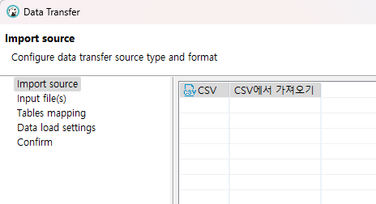
- 이때, 사양의 차이로
MySQL의지오메트리 타입이 온전히 옮겨지는 것이 아닌,WKT의 형태로 옮겨짐- 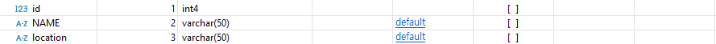
- 컬럼 값을 확인해보면, 아래와 같이
WKT포맷으로 varchar 타입의 문자열들이 기록되어 있음을 알 수 있음- 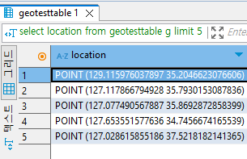
- 이를
지오메트리 타입으로 변환하는 과정을 수행해야 함- 먼저, 지오메트리 타입 컬럼을 테이블에 추가하는
AddGeometryColumn함수를 호출
/* `AddGeometryColumn(varchar table_name, varchar column_name, integer srid, varchar type, integer dimension, boolean use_typmod=true) 함수를 호출 */ select addgeometrycolumn('geotesttable', 'geotesttable', 'location_geom', 4326, 'POINT', 2) - 먼저, 지오메트리 타입 컬럼을 테이블에 추가하는
- 이후,
update geotesttable set location_geom = ST_GeomFromText(location);문을 통해 기존 컬럼의WKT를 기반으로지오메트리데이터를 생성해 컬럼 갱신
- 먼저,
PostGIS의 공간 인덱스 및 공간 연산
공간 연산을 수행해보기 전, 먼저공간 인덱스를 생성하여SELECT 쿼리의 속도를 개선할 수 있도록 해야 함
공간 인덱스 생성하기
- 참고
PostGIS에서공간 인덱스를 생성하는 구문은 다음과 같음CREATE INDEX mytable_geom_x ON mytable USING GIST (geom)CREATE SPATIAL INDEX구문을 사용하던MySQL과 다르게,PostGIS에서는USING GIST구문을 사용함USING GIST: 인덱스에서GiST(Generalized Search Tree)구조를 사용할 것을 의미- 이 키워드를 통해 인덱스를 설정할 경우,
기본 인덱스가R-트리로 설정되며, 해당 키워드를 사용하지 않을 경우표준 PostgreSQL B-트리인덱스를 생성함
공간 연산 사용하기
PostGIS와공간 인덱스의 성능을 확인하기 위해, 다음 두 가지 케이스를 비교해보려 함공간 인덱스를 사용해사전 필터링을 거친 쿼리공간 인덱스를 사용하지 않는 함수를 사용하는 쿼리
- 참고로
공간 인덱스를 사용하는 함수는 다음과 같음- 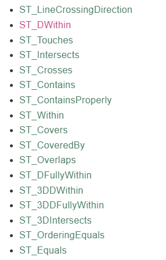
- 예시
- 한 점(
POINT(128.593317 35.865807))으로 부터 5km 떨어진 점들 검색하기-
약 237만개의 POINT가 기록된 테이블에서 이를 검색하고자 함
-
먼저, 공간 인덱스를 사용하지 않는
ST_DistanceSphere함수를 사용해봄- 이 경우, 쿼리는 다음과 같음
SELECT * FROM geotesttable WHERE ST_DistanceSphere(ST_GeomFromText('POINT(128.593317 35.865807)', 4326), location_geom) < 5000;`- 위 쿼리에 대해
EXPLAIN문을 사용해 실행 계획을 살펴보면공간 인덱스가활용되지 않으며(Seq Scan), 많은 양의 row들을 살펴봄을 알 수 있음- 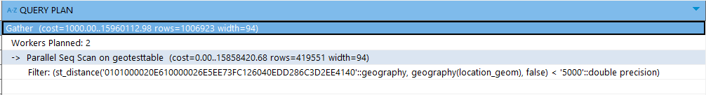
- 또한, 쿼리문을 수행하고 데이터를 가져오는데 약 3초정도 소요됨
- 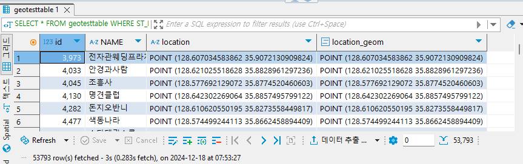
- 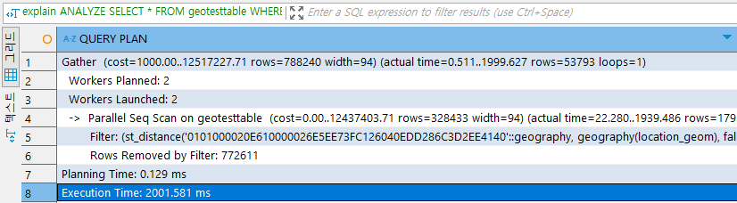
- 위 쿼리에 대해
- 이 경우, 쿼리는 다음과 같음
-
반면,
ST_DWithin(g1, g2, distance)함수를 사용할 경우공간 인덱스를 사용해 더 빠르게 탐색이 이뤄짐ST_DWithin(g1, g2, distance)는 주어진 두geometry(또는geography) g1, g2 사이의 거리가distance이내인지여부를 반환하는 함수-
- 추가하자면,
ST_DWithin()에 g1, g2로geography인자가 주어질 경우,지구타원형형태를 기준으로 하게 됨- 따라서
ST_DistanceSphere와 동일한 기준 상에서 검색하려면 4번째 선택 인자인use_spheroid을 false로 해주어야 함
- 따라서
- 추가하자면,
-
- 이 경우, 쿼리는 다음과 같음
SELECT * FROM geotesttable WHERE ST_DWITHIN(location_geom::geography, ST_GeomFromText('POINT(128.593317 35.865807)', 4326)::geography , 5000, false);- 이때, 지오메트리 자료형인
location_geom과ST_GeomFromText의 결과값을geography타입으로 캐스팅 하고 있음을 알 수 있음 - 이는
ST_DWITHIN함수가geometry값 2개를 인자로 받을 경우,distance의 단위가SRID:4326의 단위인도(degree)로 바뀌어버리기 때문에, 미터를 사용하려면geography값 2개를 인자로 주어야 하기 때문임- 그리고 이렇게 할 경우,
공간 인덱스역시 하나 더 만들어 주어야 함 - 위에서 만들었던
공간 인덱스는geometry타입인location_geom을 기준으로 했기 때문에,geography로 캐스팅하여DWITHIN함수를 호출할 경우 인덱스를 사용하지 못하기 때문 - 따라서 아래 구문을 통해
geography형태의인덱스를 하나 더 만들어야 함
CREATE INDEX location_idx_geo ON geotesttable USING GIST ((location_geom::geography)); - 그리고 이렇게 할 경우,
- 이때, 지오메트리 자료형인
- 위 쿼리에 대해
EXPLAIN문을 사용해 실행 계획을 살펴보면,공간 인덱스가 잘 활용되고 있으며(Index Scan), 탐색하는 row 갯수도 훨씬 줄어들었음을 알 수 있음- 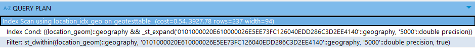
- 또한, 쿼리 수행도 총 0.4초가량으로 빠르게 이뤄짐
- 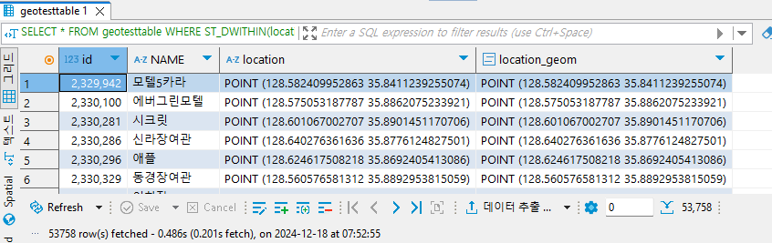
- 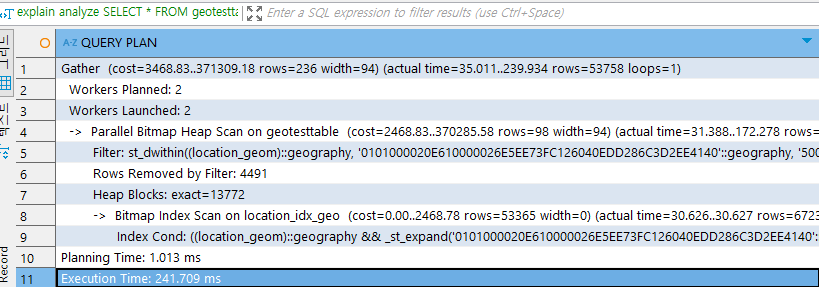
-
- 한 점(
참고
- THE DESIGN OF POSTGRES - Michael Stonebraker and Lawrence A. Rowe
- PostgreSQL과 SQL Server 비교: 차이점은 무엇인가요? | Google Cloud
- The Part of PostgreSQL We Hate the Most // Blog // Andy Pavlo - Carnegie Mellon University
- 15. Spatial Indexing — Introduction to PostGIS
- 18. Geography — Introduction to PostGIS
- ST_DWithin
- ST_DistanceSphere
- PostgreSQL: Documentation: 9.1: GiST and GIN Index Types